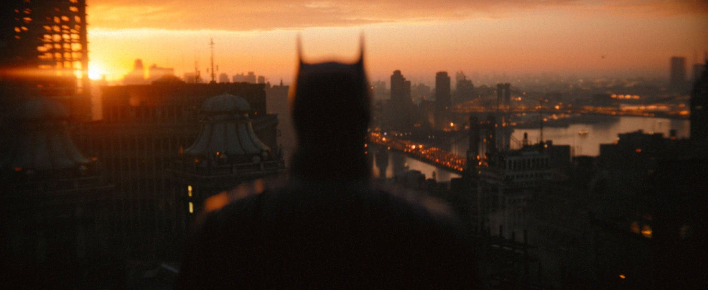

About batman
Batman es Bruce Wayne (Bruno Díaz en algunos países de habla hispana),141516 un multimillonario magnate empresarial y filántropo dueño de Empresas Wayne en Gotham City. Después de presenciar el asesinato de sus padres, el Dr. Thomas Wayne y Martha Wayne en un violento y fallido asalto cuando era niño, juró venganza contra los criminales, un juramento moderado por el sentido de la justicia. Bruce Wayne se entrena física e intelectualmente y crea un traje inspirado en los murciélagos para combatir el crimen, con sus gadgets de combate del batcinturón y sus vehículos
Batman in his new movie
Caracteristicas
- El es muy inteligente
- El es muy fuerte
- El es rico
- Sobre todo, es rico
Villanos de Batman
Batman tiene una de las mejores galerias de villanos de la industria del comic, algunos de sus mejores villanos y que estaran en esta nueva película son: